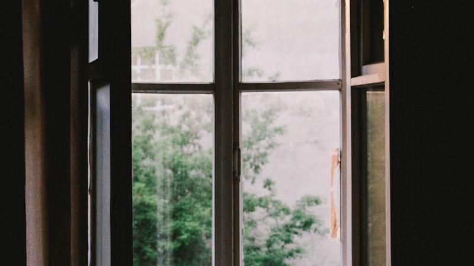

When a Door Closes, Look for the Window

We've all been there. You're moving full speed toward something — a goal, a plan, a version of the future you had all mapped out — and then the door slams shut. Maybe it's a job that didn't work out. A partnership that fell apart. A move that got canceled. Whatever it is, the feeling is the same: now what?
Here at Spinach the Cow, we know that feeling well. This brand didn't start as some perfectly executed business plan. It started as a doodle. A silly cow on a napkin that made people smile. The "real" doors we were supposed to walk through — the conventional career paths, the safe choices — those closed one by one. And honestly? Thank goodness they did.
The Window Was Always There
The thing about windows is that they're smaller than doors. They take a little more effort to climb through. You might not even notice them at first because you're too busy staring at the door that just closed. But windows let in light, fresh air, and a whole new perspective you wouldn't have had otherwise.
When we stopped trying to force the door back open and started looking around, we noticed something: there were windows everywhere. A friend who said, "You should put that cow on a shirt." A local market that had an open booth. A community of people who were craving something genuine and a little offbeat.
Why Setbacks Aren't the End
It's easy to treat a closed door like a dead end. But most of the time, it's just a redirect. The path changes, not the destination. Every setback we've faced as a brand — a supplier falling through, a product that flopped, a launch that went sideways — pushed us toward something better than what we originally planned.
That's not toxic positivity. It's pattern recognition. When you look back at the moments that felt like failures, you start to notice how many of them were actually turning points.
How to Find Your Window
So the next time something doesn't go your way, try this: instead of pushing harder on the closed door, take a breath and look around. What's in the room with you right now? What skills, connections, or ideas do you already have that you haven't explored yet?
The window might be small. It might be in a direction you didn't expect. But it's there — and on the other side of it is something you never would have found if that door had stayed open.
As Spinach would say: stay curious, stay kind, and never stop looking for the light.